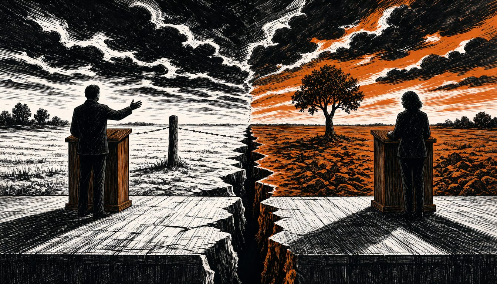

French minister Barrot calls Mélenchon a spokesman for the Kremlin
The foreign minister said Mélenchon's call for a vote in Donbas disqualifies him from office, and argued the EU budget, not French taxpayers, should carry the cost of backing Ukraine.

French foreign minister Jean-Noël Barrot said what Jean-Luc Mélenchon did was of unprecedented gravity and definitively disqualifies him from exercising the functions he aspires to. The accusation came after Mélenchon said the population of Donbas should be consulted about the region's future. Barrot, speaking on RTL and Public Sénat, said the move was of unprecedented gravity. In his view, it definitively disqualifies Mélenchon from exercising the functions he aspires to.
Barrot said the financing lever of the European Union, rather than the French taxpayer, carries the cost of supporting Ukraine. In the referendum on Ukraine's independence of 1 December 1991, 83.9 percent of voters in the Donetsk region backed independence, as did 83.86 percent in Luhansk.
The row began on Saturday, when Mélenchon spoke at a campaign event in Le Bourget. He argued there that a settlement of the Russian invasion could involve territorial concessions, especially in Donbas. In his words, France should not accept a peace that moves people to one side of a border or the other without asking.
On purchasing power, Barrot said it is unhealthy, as the French politician Marine Le Pen and Mélenchon do, to link French cost-of-living problems to budgetary aid for Ukraine. The orders of magnitude, he told the broadcasters, have nothing to do with each other. Mélenchon, in his speech at Bourget, promised that an executive led by his party would openly engage in resolving the Russian invasion.
Barrot said the Kremlin tries worldwide to convince heads of state and government that Donbas is really Russian. In his words, the war of aggression is a war to liberate it. Kyiv, for its part, has so far refused any concession on Donbas.